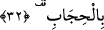
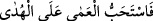
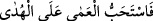
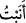
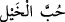

de geleceği üzere önce ‘bacaklar’ın zikredilmesi, âyet sonlarının uyumunu sağlamak
gayesine mâtuftur. Buna göre Süleyman atları kesip etini tasadduk etmiştir. O sırada at
eti helâldi. Doğrudan atları tasadduk etmemiştir; çünkü bu, uygun zaman ve mekân
gerektirir.
Hâsılı Süleyman (a.s.) dokuz yüz atı boğazlatmış, geriye henüz kendisine sunulmamış
yüz at kalmıştır. Rivâyete göre bugün insanların elinde bulunan kaliteli Arap atları, geri
kalan bu atların neslindendir.
Bu ifâdede mezkûr atların denizden çıkarılmış olduğunu destekleyen unsurlar vardır.
Çünkü savaş ganîmeti olsalardı, dünyada o gün başka atlar da bulunduğu için
günümüzdeki kaliteli atların neslinin bu yüz attan gelmiş olması gerekmezdi. Ayrıca
atlar, gerideki ikinci mânâda babasından mîras kaldığı takdirde Süleyman’ın elinde
birer emânet olacaklardı. Emânet ise bilindiği gibi, ne boğazlanabilir ne de ayakları
kesilebilir.
32. Süleyman: “Gerçekten ben malı, Rabbimi anmamı sağladığından dolayı çok
severim” dedi. Nihâyet güneş battı.
“Süleyman:” Başka şeylerle meşgul olup ibâdeti kaçırdığını itiraf etmek ve bundan
dolayı ne kadar pişman olduğunu göstermek amacıyla ‘Gerçekten ben malı, Rabbimi
anmamı sağladığından dolayı çok severim’ dedi.”
Süleyman (a.s.) bu sözü biraz sonra atları geri getirtip bacaklarını kestirtmeye hazırlık
olsun için söylemiştir. Söze takip ifâde eden (ف) ile başlanması, devam eden resmî
geçidin başlangıçı itibariyle değil, sonu itibarıyla söylediğini gösterir. Yâni bu sözü
resmî geçidin hemen peşinden söylemiştir.
Sözünü “gerçekten” diyerek tekid ile söylemesi, itiraf ve pişmanlığının gönülden
olduğunu ifâde etmek içindir; yoksa haberin içeriğinin gerçek olduğunu göstermek için
değil. Aslında “sevdim” anlamına gelen ( ) ifâdesi, () yâni tercih ettim
) ifâdesi, () yâni tercih ettim
mânâsında olup -( ) ile değil- () ile müteaddî olur. Tıpkı () yâni
) ile değil- () ile müteaddî olur. Tıpkı () yâni
“Ama onlar, körlüğü hidâyete tercih etmişler” (Fussilet 41/17) ifâdesinde olduğu
gibi.
Bir şeyi seven, aynı zamanda onu tercih etmiş demektir. Fakat burada kelime, ()
yâni “yöneldim” anlamında olması ve onun mânâsını taşıması hasebiyle, onun gibi ()
ile müteaddî olmuştur. () “at sevgisi” ifâdesi de mef’ûlü, yâni mânâsı tazammun
edilen ()’nün mef’ûl-i bih’i olmuştur. Âyetteki “zikr”in yerine getirilen ise “at